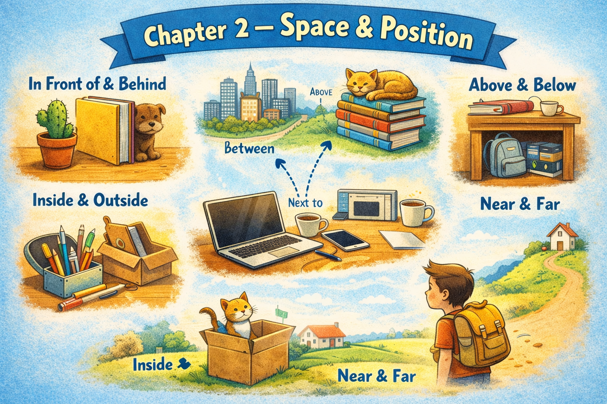

Chapter 2 — Space & Position

Micro Scene 1 — Light and Direction
1️⃣ Scene Text
The window is on my left side, slightly behind the monitor.
Light enters the room at an angle and spreads across the desk.
The reflection appears on the screen when the sun is strong.
The shadow of the monitor falls onto the wall behind it.
The edge of the desk is aligned with the wall.
The external monitor stands directly in front of me.
The laptop is positioned just below the level of the second screen.
When I move slightly to the right, the angle of the reflection changes.
The space between the desk and the wall is narrow but usable.
The room feels balanced, even though the layout is not perfectly symmetrical.
2️⃣ Core Verb Pool
enter
spread
appear
fall
align
stand
position
move
change
feel
3️⃣ Structure Patterns
X is on / behind / beside Y
X enters at an angle
X falls onto Y
X is aligned with Y
X is positioned below Y
The space between A and B
X feels + adjective
4️⃣ Replace & Extend
Replace the direction:
The window is on my left side.
→ The window is directly behind me.
→ The window is slightly above the desk.
Replace the spatial relation:
The monitor stands in front of me.
→ The monitor stands beside the laptop.
→ The monitor stands against the wall.
Replace the effect:
The shadow falls onto the wall.
→ The light reflects off the surface.
→ The reflection disappears when I adjust the screen.
5️⃣ Spoken Mode
The window’s on my left.
Light comes in at an angle.
The monitor’s right in front of me.
The reflection changes when I move.
It’s not perfectly symmetrical, but it works.
🔎 Structural Notes
• “fall onto” expresses direction + surface.
• “between A and B” marks spatial separation.
• “aligned with” expresses structural relation, not motion.
Micro Scene 2 — Layers and Surfaces
1️⃣ Scene Text
The desk has a smooth surface with a slightly reflective finish.
On top of it lies the laptop, resting directly on the wood.
A thin layer of dust collects near the back edge where I rarely touch.
The mousepad creates a softer surface beneath the mouse.
The screen forms a vertical plane, separating my focus from the room behind it.
Light reflects off the metal frame of the monitor.
The cables rest on the surface but occasionally slip over the edge.
The wall behind the desk is flat and painted in a neutral color.
There is a subtle contrast between the texture of the desk and the texture of the wall.
Each surface defines a boundary in the space.
When objects overlap, one layer partially hides another.
2️⃣ Core Verb Pool
lie
rest
collect
create
form
separate
reflect
slip
define
overlap
hide
3️⃣ Structure Patterns
X lies on Y
X rests on Y
A layer of + noun
X forms + noun
X separates A from B
X reflects off Y
X slips over Y
There is a contrast between A and B
X partially hides Y
4️⃣ Replace & Extend
Replace the surface:
The laptop rests on the desk.
→ The phone rests on the shelf.
→ The notebook lies on the table.
Replace the texture:
The surface is smooth.
→ The surface is rough.
→ The surface is uneven.
Replace the layer:
A layer of dust collects near the edge.
→ A layer of light covers the wall.
→ A layer of cables sits under the desk.
5️⃣ Spoken Mode
The laptop’s resting on the desk.
There’s a thin layer of dust near the back.
Light reflects off the monitor frame.
The cables sometimes slip over the edge.
The surfaces kind of overlap and hide each other.
🔎 Structural Notes
• “a layer of” introduces accumulation.
• “separate A from B” defines spatial division.
• “reflect off” expresses direction away from a surface.
Micro Scene 3 — Distance and Proportion
1️⃣ Scene Text
The external monitor is positioned slightly farther away than the laptop screen.
The distance between my chair and the desk is just enough for comfortable movement.
The bookshelf stands about an arm’s length behind me.
The space under the desk feels narrower than it appears.
The second screen is taller and wider than the laptop display.
Its size makes the overall setup look more balanced.
The drawer is small compared to the width of the desk.
The power strip is relatively compact, but it supports multiple devices.
When I lean forward, the screen feels closer than it actually is.
The proportions of the workspace are not perfectly symmetrical, yet they remain functional.
Each object occupies a certain amount of space without overwhelming the others.
2️⃣ Core Verb Pool
position
stand
feel
appear
compare
support
lean
occupy
remain
overwhelm
3️⃣ Structure Patterns
X is farther than Y
The distance between A and B
X is taller / wider than Y
X is small compared to Y
X is relatively + adjective
X feels + adjective
X occupies + noun
X remains + adjective
4️⃣ Replace & Extend
Replace the comparison:
The monitor is taller than the laptop.
→ The shelf is higher than the desk.
→ The table is longer than the cabinet.
Replace the proportion:
The drawer is small compared to the desk.
→ The phone is small compared to the monitor.
→ The notebook is thin compared to the manual.
Replace the perception:
The space feels narrow.
→ The room feels larger than expected.
→ The setup feels balanced.
5️⃣ Spoken Mode
The monitor’s a bit farther away than the laptop.
The shelf’s about an arm’s length behind me.
The drawer’s small compared to the desk.
It’s not symmetrical, but it works.
Nothing feels overwhelming.
🔎 Structural Notes
• “compared to” introduces proportional relation.
• “relatively + adjective” softens evaluation.
• “occupy space” expresses spatial allocation.
Micro Scene 4 — Movement Within Space
1️⃣ Scene Text
When I shift my chair slightly to the left, the angle of the screens changes.
If I pull the laptop closer, the cables tighten behind it.
The mouse moves smoothly across the mousepad.
Sometimes the chair rolls backward when I push against the desk.
When I turn my head, my field of view expands beyond the screens.
The light shifts gradually as the sun moves across the sky.
If I stand up, the entire layout looks different from above.
The space feels more open when I move away from the desk.
Even a small adjustment can alter the balance of the setup.
Movement reveals relationships that are not visible when everything is still.
The arrangement appears stable, but it is constantly responding to motion.
2️⃣ Core Verb Pool
shift
pull
tighten
move
roll
push
turn
expand
stand
alter
reveal
respond
3️⃣ Structure Patterns
When X + verb, Y + verb
If X + verb, Y + verb
X moves + adverb
X rolls + direction
X appears + adjective
X responds to + noun
Even + small noun + can + verb
4️⃣ Replace & Extend
Replace the movement:
The chair rolls backward.
→ The monitor tilts slightly.
→ The laptop slides forward.
Replace the condition:
When I pull the laptop closer, the cables tighten.
→ When I adjust the monitor, the reflection changes.
→ When I stand up, the perspective shifts.
Replace the effect:
Movement reveals relationships.
→ Movement changes perception.
→ Movement disrupts alignment.
5️⃣ Spoken Mode
When I move the chair, the screen angle changes.
If I pull the laptop closer, the cables get tighter.
The chair sometimes rolls back a bit.
Even small movements change the setup.
It looks stable, but it’s always responding.
🔎 Structural Notes
• “When” introduces a natural sequence.
• “If” introduces conditional consequence.
• “respond to” expresses reactive relationship.
Micro Scene 5 — Boundaries and Edges
1️⃣ Scene Text
The edge of the desk marks a clear boundary between my workspace and the empty floor.
Several cables hang over the edge, nearly touching the ground.
The corner of the desk feels slightly sharper than the rest of the surface.
The monitor stand stays within the limits of the tabletop.
Nothing extends too far beyond the boundary, except for a few loose wires.
The wall forms a vertical boundary behind the desk.
The space between the desk and the wall creates a narrow gap.
Dust tends to gather along the edges where surfaces meet.
When objects move too close to the edge, they risk falling off.
Each boundary defines where one surface ends and another begins.
Edges are subtle, but they control the structure of the space.
2️⃣ Core Verb Pool
mark
hang
touch
stay
extend
form
create
gather
move
risk
define
control
3️⃣ Structure Patterns
The edge of + noun
X hangs over Y
X stays within + noun
X extends beyond + noun
The space between A and B
X gathers along + noun
X risks + verb-ing
X defines + noun
4️⃣ Replace & Extend
Replace the boundary:
The wall forms a boundary.
→ The shelf forms a boundary.
→ The monitor frame forms a boundary.
Replace the risk:
Objects risk falling off.
→ Devices risk overheating.
→ Cables risk disconnecting.
Replace the edge:
Dust gathers along the edges.
→ Light collects along the surface.
→ Cables rest along the boundary.
5️⃣ Spoken Mode
The edge of the desk separates the workspace from the floor.
Some cables hang over the side.
There’s a narrow gap between the desk and the wall.
If something gets too close to the edge, it might fall.
The edges kind of define the whole layout.
🔎 Structural Notes
• “hang over” expresses position beyond support.
• “stay within” indicates containment.
• “risk + verb-ing” expresses potential negative outcome.
Micro Scene 6 — Alignment and Order
1️⃣ Scene Text
The two screens are almost aligned, though one sits slightly higher than the other.
The laptop is centered in front of me, but not perfectly parallel to the desk edge.
The monitor stand is placed directly in the middle of the table.
Some objects are intentionally arranged in a straight line.
Others are slightly off balance, creating a subtle asymmetry.
The cables behind the monitors are loosely grouped rather than precisely aligned.
When I adjust the position of one device, the visual balance shifts.
The drawer handle lines up with the edge of the desk.
The bookshelf behind me is vertically aligned with the wall.
Even when the setup appears messy, there is an underlying structure.
Order does not always mean symmetry, but it does require consistency.
2️⃣ Core Verb Pool
align
center
place
arrange
group
adjust
shift
line up
appear
require
3️⃣ Structure Patterns
X is aligned with Y
X is centered in front of Y
X is placed + position
X lines up with Y
X appears + adjective
Even when X + verb, Y + verb
X requires + noun
4️⃣ Replace & Extend
Replace alignment:
The screens are aligned.
→ The books are aligned.
→ The cables are aligned.
Replace balance:
The setup appears messy.
→ The layout appears clean.
→ The structure appears intentional.
Replace consistency:
Order requires consistency.
→ Stability requires support.
→ Balance requires proportion.
5️⃣ Spoken Mode
The screens are almost aligned.
The laptop’s centered, but not perfectly straight.
Some things are lined up, others aren’t.
It looks messy, but there’s still some structure.
Order doesn’t mean everything’s symmetrical.
🔎 Structural Notes
• “line up with” expresses linear alignment.
• “Even when…” introduces contrast.
• “require + noun” expresses structural necessity.
🔸 Integration Scene — Spatial Structure of My Workspace
My workspace is defined by boundaries, layers, and alignment.
Two screens stand in front of me, slightly offset but visually connected.
The laptop sits just below the external monitor, creating a vertical relationship.
Light enters from the left and spreads across the desk surface.
Shadows fall behind the devices, outlining their edges.
The cables run downward and gather near the power strip.
Some objects rest neatly within boundaries, while others extend slightly beyond them.
The space between the desk and the wall forms a narrow channel for wires.
Each surface supports a different layer of objects.
The chair moves subtly, shifting the perspective of the entire setup.
Distance and proportion influence how balanced the space feels.
Even small movements alter the visual alignment.
Edges define where one zone ends and another begins.
Although the arrangement is not symmetrical, it maintains functional order.
Every object occupies a position within a larger structure.
Nothing is random; everything relates to something else.
Integration Verb Focus
align
position
rest
extend
define
support
occupy
shift
maintain
Reflection
How does the spatial arrangement of your workspace affect your focus?
What feels balanced?
What feels unstable?